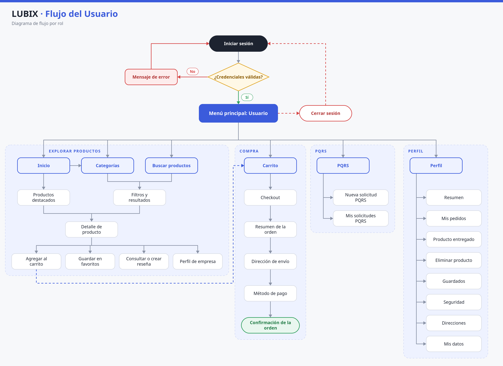
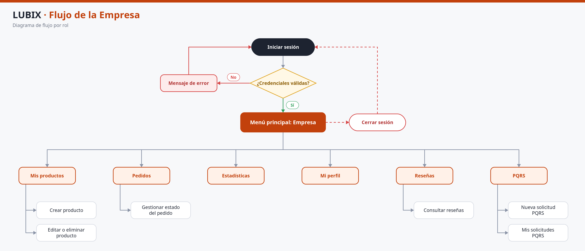
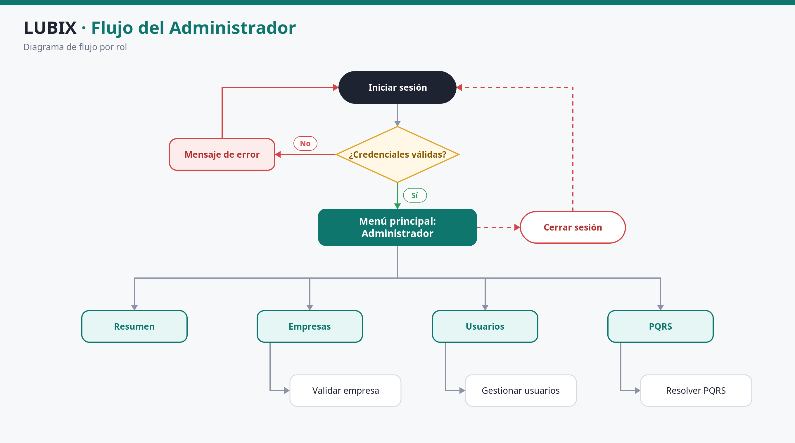

Manual técnico y de usuario · LUBIX
1.1.6 Mapa de navegación
Estructura de navegación de la plataforma LUBIX para los perfiles de usuario, empresa y administrador. Cada mapa parte del inicio de sesión y muestra el menú principal, los módulos y los submódulos correspondientes.
Introducción
La navegación de LUBIX se concibe como una experiencia orientada a tareas: cada pantalla debe permitir al usuario saber dónde se encuentra, qué puede hacer y cómo regresar al punto anterior sin perder el contexto. La plataforma organiza sus contenidos en una estructura jerárquica de tres niveles —menú principal, módulos y submódulos o acciones— que se adapta al rol de la cuenta: usuario final, empresa o administrador.
El acceso se realiza mediante una aplicación web y una aplicación móvil que comparten la misma lógica funcional. En la web, la navegación principal se concentra en la barra superior, el menú del usuario y las pestañas internas de cada panel. En la aplicación móvil, la barra inferior de cinco pestañas —Inicio, Buscar, Categorías, Carrito y Perfil— cumple la función de menú principal.
Filosofía de navegación
- Consistencia: los mismos módulos conservan nombres, iconos y ubicación en web y móvil.
- Jerarquía visible: el menú principal conduce a los módulos; cada módulo presenta sus pestañas, filtros o acciones.
- Acceso por rol: el sistema muestra únicamente las opciones autorizadas para el tipo de cuenta.
- Reconocimiento sobre memoria: los iconos y etiquetas permiten identificar las funciones sin recordar rutas.
- Prevención de errores: las acciones destructivas solicitan confirmación o presentan un estado claramente diferenciado.
- Retroalimentación: cada operación relevante produce un mensaje de éxito, advertencia o error.
Estructura general
- Capa pública: inicio, catálogo, búsqueda, detalle de producto, perfil de empresa, inicio de sesión, registro y recuperación de contraseña.
- Capa de autenticación: validación de credenciales, verificación de correo, recuperación y restablecimiento de contraseña.
- Capa de menú principal: panel o menú correspondiente al rol autenticado.
- Capa de módulos: catálogo, carrito, pedidos, productos, empresas, usuarios, PQRS o estadísticas.
- Capa de submódulos y acciones: formularios, pestañas internas, filtros, modales, confirmaciones y pantallas de detalle.
- Capa transversal: cambio de tema, perfil, cierre de sesión y acceso a soporte mediante PQRS.
Recomendaciones para el inicio de sesión
- Acceder mediante la dirección oficial y verificar HTTPS en producción.
- Seleccionar correctamente el tipo de cuenta: Usuario o Empresa.
- Usar credenciales personales e intransferibles.
- No recordar contraseñas en equipos compartidos.
- Verificar la cuenta por correo si aún no está activa.
- Usar la opción Recuperar si se olvidó la contraseña.
- Revisar que la fecha y hora del dispositivo sean correctas.
Recomendaciones para el cierre de sesión
- Cerrar sesión desde el menú del usuario con Cerrar Sesión.
- No basta con cerrar la pestaña o el navegador.
- En móvil, cerrar sesión desde la pantalla de perfil.
- En equipos compartidos, cerrar sesión y cerrar el navegador.
- No usar el botón “Atrás” para volver a una pantalla protegida.
- Reportar sesiones sospechosas a la mesa de ayuda.
Estándar de botones e iconos de la interfaz
La siguiente tabla establece el significado de referencia de los botones, iconos y símbolos más habituales. La representación gráfica puede variar ligeramente entre la aplicación web y la móvil, pero la función descrita se mantiene.
| Icono/Símbolo | Nombre del Botón | Función / Acción |
|---|---|---|
| 🏠 | Inicio | Regresa a la página principal del rol autenticado o al sitio público. |
| 🔍 | Buscar | Abre el buscador de productos y permite introducir palabras clave. |
| 🛒 | Carrito | Abre el carrito de compras; el indicador numérico muestra la cantidad de artículos. |
| 👤 | Perfil / Usuario | Despliega el menú del usuario con acceso al perfil y al cierre de sesión. |
| 💬 | PQRS | Abre el módulo de peticiones, quejas, reclamos y sugerencias. |
| 🌙 / ☀️ | Tema | Alterna entre el modo oscuro y el modo claro de la interfaz. |
| ☰ | Menú | Abre el menú de navegación lateral o la lista de opciones en dispositivos móviles. |
| ⌄ | Desplegable | Expande un submenú, una lista de opciones o un panel de filtros. |
| ← | Volver | Regresa a la pantalla o al paso anterior sin ejecutar la acción en curso. |
| ✖ | Cerrar | Cierra una ventana modal, un panel lateral o un formulario sin guardar cambios. |
| ✓ | Guardar / Confirmar | Guarda los cambios o confirma la acción solicitada. |
| ✚ | Agregar | Añade un producto al carrito, una dirección, una imagen o un registro nuevo. |
| − | Quitar / Disminuir | Reduce la cantidad de un producto o elimina un elemento de una lista temporal. |
| 🗑️ | Eliminar | Elimina un producto, una dirección, una solicitud o un registro; normalmente solicita confirmación. |
| 📦 | Pedidos | Abre el historial o la gestión de pedidos según el rol. |
| ❤️ | Guardados / Favoritos | Añade o retira un producto de la lista de favoritos. |
| ⭐ | Reseñas | Permite consultar, crear o gestionar calificaciones y reseñas de productos. |
| 📊 | Estadísticas | Muestra indicadores, métricas y reportes del panel de empresa o administración. |
| 🏢 | Empresas | Abre la gestión de empresas registradas y pendientes de validación. |
| 👥 | Usuarios | Abre la gestión de usuarios registrados. |
| 🛡️ | Seguridad | Accede a las opciones de seguridad de la cuenta y cambio de contraseña. |
| 📍 | Direcciones | Abre la gestión de direcciones de envío o de contacto. |
| 💳 | Pago | Inicia o configura el método de pago dentro del checkout. |
| 📄 | Factura / Documento | Descarga o consulta facturas, comprobantes y documentos adjuntos. |
| 🔁 | Reintentar | Vuelve a ejecutar una operación que falló por un error temporal. |
| ❓ | Ayuda | Abre la orientación, el centro de ayuda o el canal de soporte. |
| 🚪 | Cerrar Sesión | Finaliza la sesión activa y redirige a la pantalla de inicio de sesión. |
Usuario Mapa de navegación del usuario
El usuario final se autentica y llega a un menú principal desde el cual puede consultar el catálogo, buscar productos, gestionar el carrito, completar una compra, presentar PQRS y administrar su perfil. En la aplicación móvil, este mismo conjunto de funciones se organiza mediante la barra inferior de cinco pestañas.

Empresa Mapa de navegación de la empresa
La cuenta de empresa accede a un panel orientado a la gestión comercial. Desde el menú principal puede administrar su catálogo, atender pedidos, consultar estadísticas, revisar reseñas, actualizar su perfil y presentar PQRS. En la aplicación móvil, estas funciones se concentran en el dashboard de empresa.

Administrador Mapa de navegación del administrador
El administrador dispone de un panel de supervisión global. Su menú principal agrupa el resumen de métricas, la gestión de empresas, la gestión de usuarios y la administración de PQRS. Las acciones sensibles, como la validación de una empresa o la resolución de una solicitud, se ejecutan desde el módulo correspondiente y quedan sujetas a las políticas de seguridad y auditoría.

Correspondencia entre la navegación web y móvil
| Función | Acceso web | Acceso móvil |
|---|---|---|
| Inicio | Barra superior o logotipo LUBIX | Pestaña Inicio |
| Búsqueda de productos | Campo de búsqueda de la barra superior | Pestaña Buscar |
| Categorías | Página de inicio o resultados de búsqueda | Pestaña Categorías |
| Carrito | Enlace Carrito de la barra superior | Pestaña Carrito |
| Perfil | Menú del usuario > Ver Perfil | Pestaña Perfil |
| PQRS | Enlace PQRS de la barra superior | No disponible como pestaña; se accede desde la web |
| Cierre de sesión | Menú del usuario > Cerrar Sesión | Pantalla Perfil > Cerrar sesión |
| Panel de empresa | Menú Mis productos, Pedidos, Estadísticas, Mi Perfil, Reseñas | Pantalla de dashboard de empresa |
| Panel de administración | Pestañas Resumen, Empresas, Usuarios, PQRS | Pantalla de dashboard de administrador |
Buenas prácticas de navegación
- Utilizar el menú principal y las pestañas internas para desplazarse.
- Guardar o cancelar explícitamente antes de abandonar un formulario con datos sin guardar.
- No abrir varias pestañas para ejecutar la misma operación de compra o de gestión.
- Revisar el indicador del carrito después de agregar o eliminar productos.
- Confirmar el rol activo antes de realizar operaciones administrativas o de empresa.
- Si una pantalla no carga, reintentar o recargar una sola vez; si persiste, reportar el caso con el mensaje exacto y una captura.
- Al finalizar, cerrar sesión de forma explícita y verificar que la pantalla de inicio de sesión se muestre nuevamente.